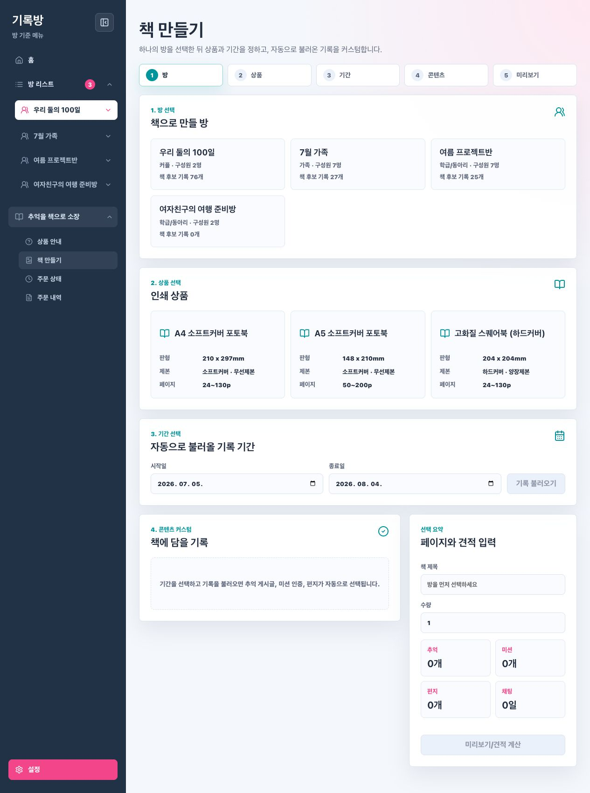
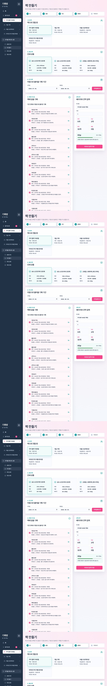
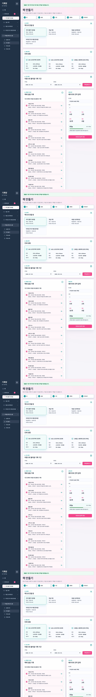
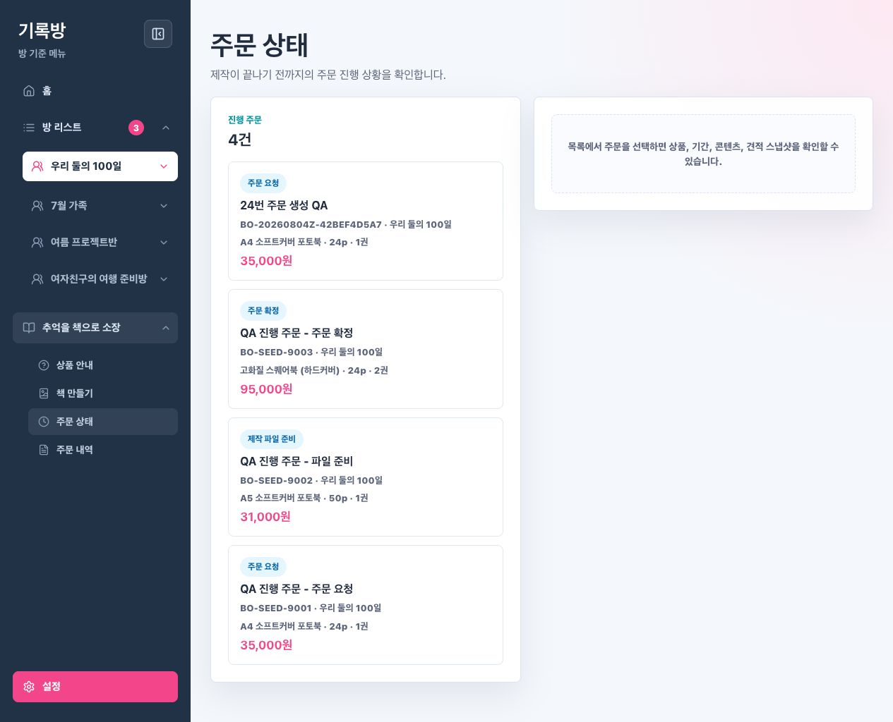
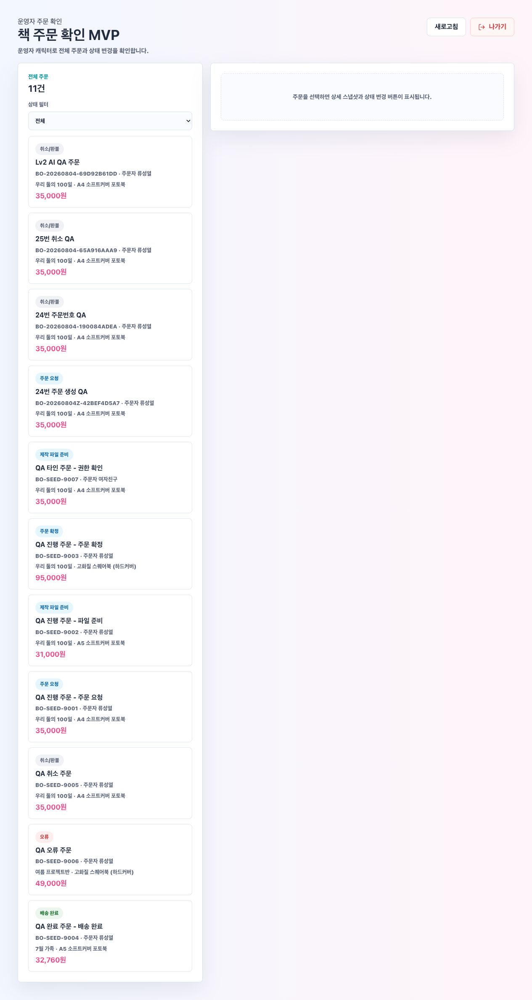
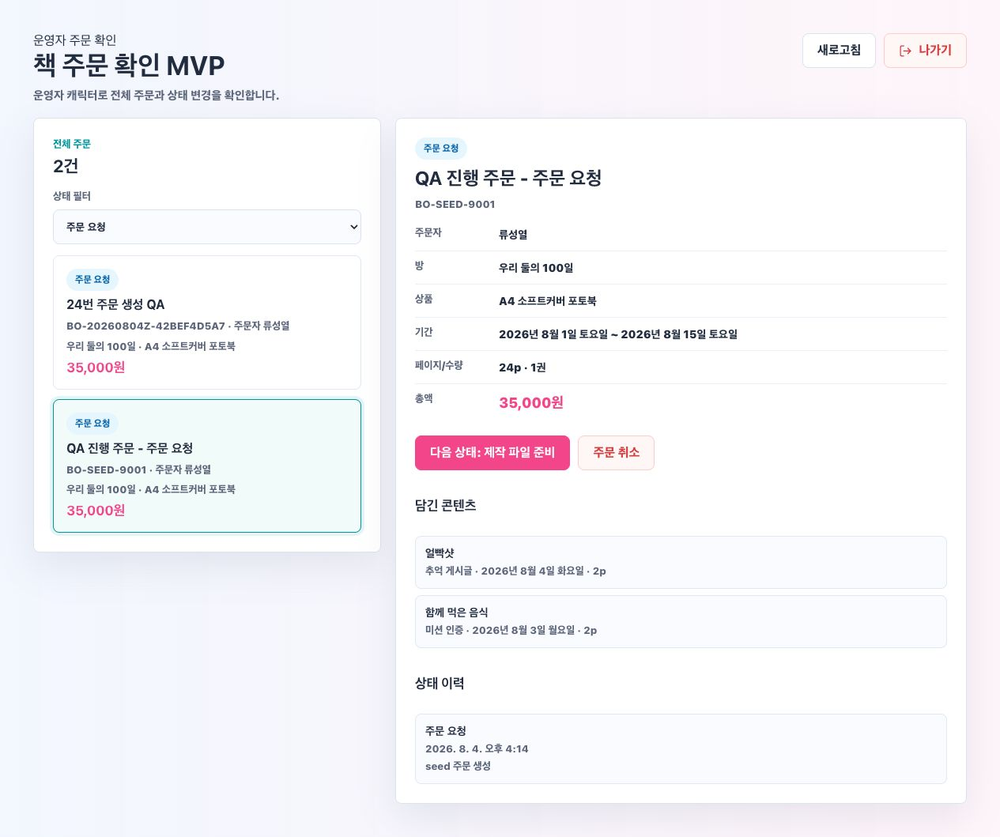

Lv2 책 생성/주문 AI QA Report
생성일: 2026-08-04 KST · 대상: #20~#27 책 제작/주문 기능 전체 흐름
검증 요약
| 영역 | 결과 | 확인 내용 |
|---|---|---|
| 빌드 | PASSED | npm run build, ./gradlew test 통과 |
| 사용자 책 생성 | PASSED | 방 선택, 상품 선택, 기간 기반 콘텐츠 불러오기, 미리보기/견적 표시 확인 |
| 주문 생성/조회 | PASSED | 미리보기 snapshot 기반 주문 생성, 진행 주문/내역/상세 조회 확인 |
| 취소 정책 | PASSED | PAID 취소 성공, 확정 주문 취소는 400 ORDER_CANCEL_NOT_ALLOWED |
| 운영자 MVP | PASSED | 운영자 캐릭터 진입, 전체 주문 조회, 상태 전이, 취소, 일반 사용자 403 확인 |
| 권한 | PASSED | 타 사용자 주문 상세는 404 PRINT_ORDER_NOT_FOUND, 운영자 API는 403 OPERATOR_ONLY |
API Curl Evidence
| 검증 | 결과 |
|---|---|
| Preview 생성 | previewId=6 |
| 주문 생성 | createdStatus=PAID |
| 사용자 취소 | cancelledStatus=CANCELLED_REFUND |
| 운영자 다음 상태 변경 | operatorNextStatus=PDF_READY |
| 비운영자 운영자 API 접근 | 403 |
| 타 사용자 주문 상세 접근 | 404 |
| 확정 주문 취소 시도 | 400 |
Screen Evidence






Human QA Focus
- 책 만들기에서 상품별 페이지 제한 초과 시 다음 단계가 막히는지 직접 확인한다.
- 주문 생성 모달의 상품, 방, 기간, 콘텐츠 수, 총액이 미리보기와 일치하는지 확인한다.
- 일반 사용자 주문 상태와 주문 내역의 분리 기준이 자연스러운지 확인한다.
- 운영자 캐릭터가 일반 사용자 사이드바 없이 별도 화면으로 진입하는지 확인한다.
- 운영자 상태 변경 후 사용자 주문 상태/내역 화면에 반영되는지 확인한다.
Known Scope
- 창작 방식은 Template 고정이다.
- PDF 직접 업로드, 실제 결제, 배송, 환불 정산, 예치금 모델은 이번 구현 범위에서 제외했다.
- 상품 안내 상세 페이지는 기획중 placeholder로 유지했다.